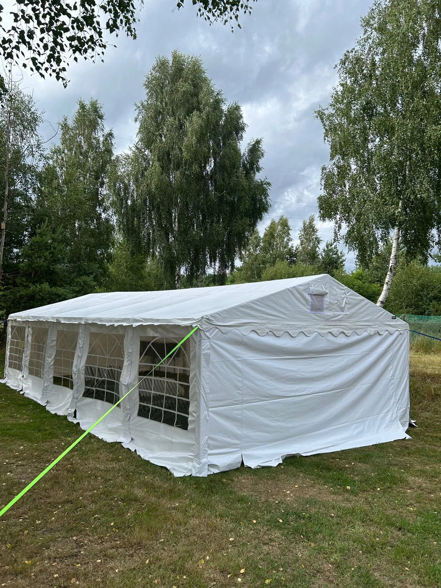

— ROD, działka pracownicza, dom letniskowy. Otwarcie sezonu, zjazd sąsiadów, 50-tka, komunia wnuka. Małe społeczności, dużo ciasta, pod dachem nawet jak leje.
ROD to miejsce gdzie ludzie rządzą się sami. Wolimy takie sytuacje — nikt nie mówi że trzeba się rozebrać do 24:00, nikt nie dolicza korkowego za własny bimber, sąsiad z alei obok przynosi swoje nalewki.
Imprezy ROD-owskie mają swoją specyfikę: mniej zadęcia niż w knajpie, więcej improwizacji. Namiot to punkt bazowy — dach nad stołem, osłona przed południowym słońcem, ratunek jak nadejdzie chmura.
Namiot 5×10m na 40-60 osób, stoły + krzesła, girlandy LED, obciążniki. Wejdziemy wąskimi alejkami ROD — mamy dostawczak kompaktowy, montujemy na ograniczonej przestrzeni.
Mała działka, zjazd sąsiadów, kameralne urodziny. Odbiór własny samochodem.
Klasyka ROD — mieści rodzinę + sąsiadów. Dojedziemy alejkami. Z montażem.
Święto pieczonego ziemniaka, zjazd alei (3-4 działki), impreza stowarzyszenia.
ROD w okolicach Kielc, czerwcowa sobota. Stowarzyszenie działkowców organizowało otwarcie sezonu. 45 osób, stoły ciast, sałatki, grill. Namiot 5×10 z montażem — alejka była wąska, ale dostawczak wszedł. "Pięć osób zarządu chciało sprawdzić co to za firma. Po 20 minutach już wiedzieli — namiot stawiamy, wy robicie swoje."
Zwykle tak. Nasz dostawczak ma ~2m szerokości. Jak alejka ma 2.5m+ bez trudu. Węższe — pytaj, czasem udaje się ręcznie wnieść elementy na odległość 20-30m.
Tak, jeśli impreza wykracza poza twoją działkę, albo jeśli dojeżdżamy alejkami ROD. To twoja odpowiedzialność — my nie kontaktujemy się z zarządem, ty to załatwiasz.
Standard 24h. Na ROD często pytają o 2-3 dni (długi weekend) — dopłata 30-50% za każdy dodatkowy dzień, negocjujemy.
Nie. Mocujemy obciążnikami, nie kołkami. Po demontażu w miejscu namiotu trawa jest pognieciona (jak po pikniku), ale za 3-5 dni odrasta.
— wypełnij formularz. specjalne stawki dla ROD-ów (stałych klientów).
